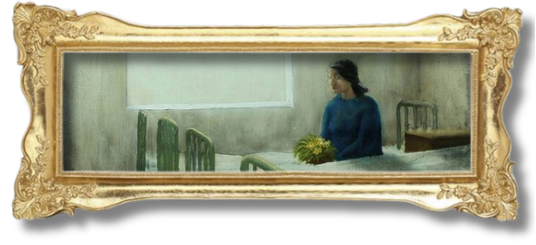

[3] I once heard a story about a girl who requested something so vile from her paramour that he told her family and they had her hauled her off to a sanitarium. I don’t know what deviant pleasure she asked for, though I desperately wish I did. What magical thing could you want so badly that they take you away from the known world for wanting it?
This story is a testament to the double standards established by society on assertiveness. When men know what they want, they are labeled as confident, but when women know what they want, they are deemed too demanding. It just goes to show how assertive women are perceived negatively as hostile or aggressive, suggesting that they do not have a place in the world (Crawford 549-564).
Despite the consequences received by the girl in the story, the protagonist still wishes that she, too, had demanded something as “magical” as the girl’s request (3). In the protagonist’s early life, she does not concern herself with the pre-existing norms and expectations surrounding her gender, signifying that during this part of her life, she has full agency in her actions.